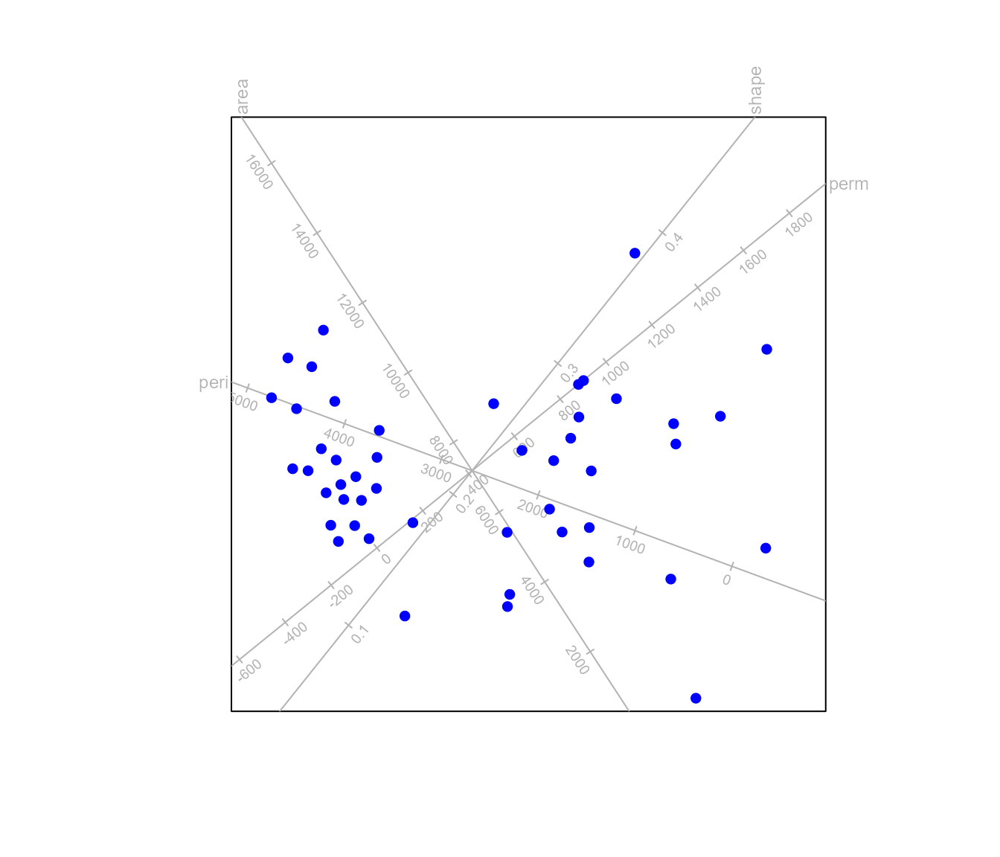
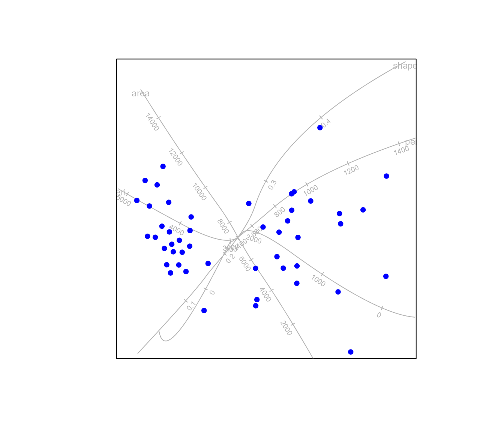
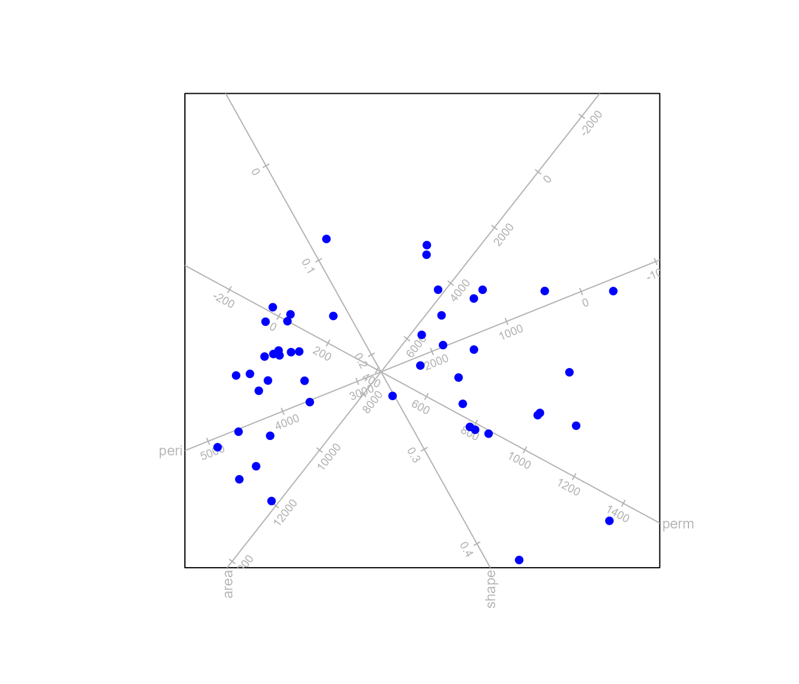
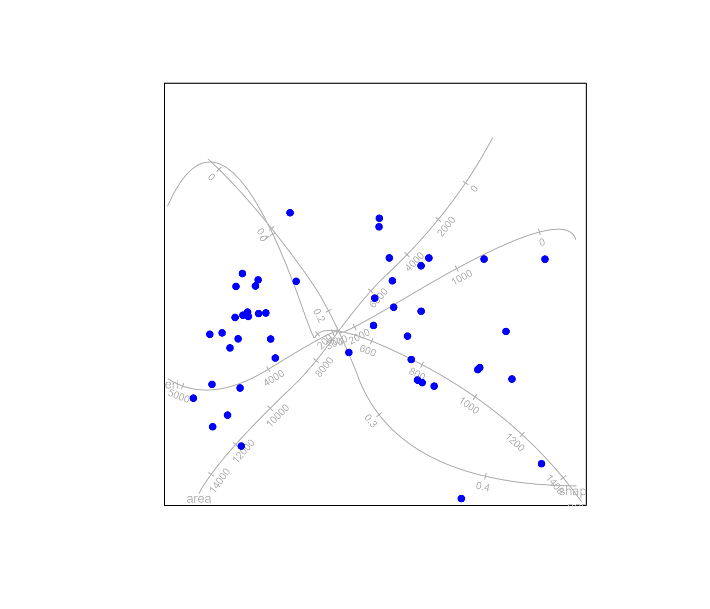
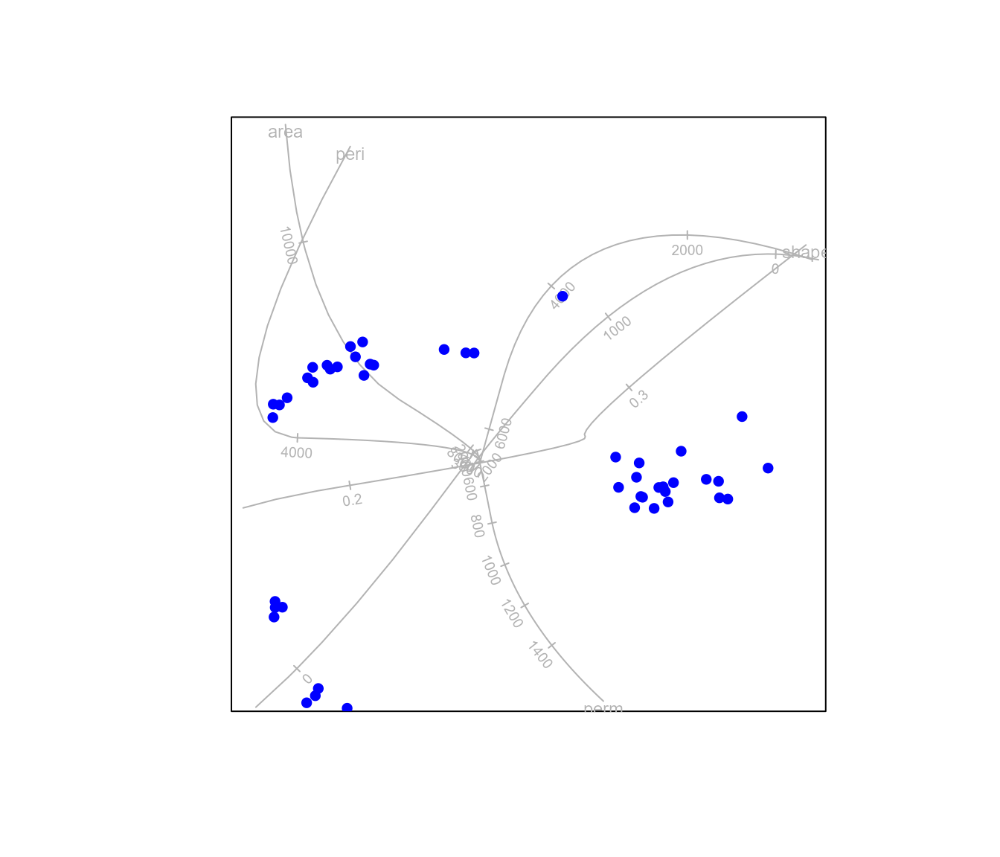
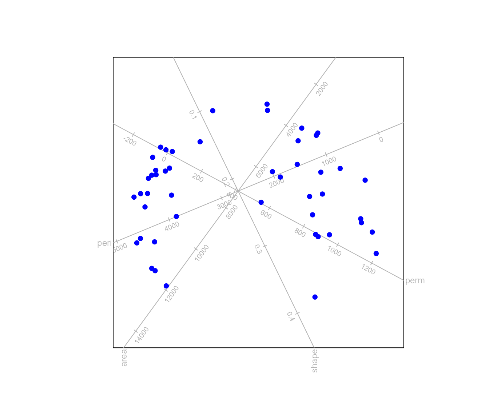

MDS.Rmd
library(biplotEZ)
#> Welcome to biplotEZ!
#> This package is used to construct biplots
#> Run ?biplot or vignette() for more information
#>
#> Attaching package: 'biplotEZ'
#> The following object is masked from 'package:stats':
#>
#> biplotThis vignette deals with biplots based on Multidimensional scaling (MDS).
In general, multidimensional scaling deals with constructing a low dimensional map of \(n\) samples such that the Euclidean distances between the samples match a given set of dissimilarities \(\mathbf{\Delta}:n \times n\) as closely as possible. Here the focus is on Principal Coordinate Analysis (PCO), an approach based on the singular value decomposition of a matrix. However, the regression biplot provides a general structure for fitting any 2D map of samples with biplot axes.
The function regress accepts as arguments an object of
class biplot. The call to the function biplot
should contain the data set that will be used to construct the biplot
axes. The second argument Z contains the coordinates of the
samples in the MDS map. By default linear regression axes will be fitted
to the plot. If \(\mathbf{X}\) denote
the data matrix, the directions of the biplot axes are found by solving
the regression equation
\[ \mathbf{X} = \mathbf{ZH}' + \mathbf{E}. \] The matrix \(\mathbf{H}'=(\mathbf{Z'Z})^{-1}\mathbf{Z'X}\) and calibration of the axes proceed analogous to equation (2) in the biplotEZ vignette. The coordinates of the marker \(/mu\) on biplot axis \(j\) is given as follows
\[ p_{\mu} = \frac{\mu}{\mathbf{h}_{(j)}'\mathbf{h}_{(j)}}\mathbf{h}_{(j)}. \]
biplot(rock) |>
regress(Z = MASS::sammon(dist(scale(rock), method="manhattan"))$points) |>
plot()
#> Initial stress : 0.02554
#> stress after 10 iters: 0.01094, magic = 0.500
#> stress after 20 iters: 0.01080, magic = 0.500
#> stress after 30 iters: 0.01078, magic = 0.500
More flexibility is provided by approximating the biplot axes using B-splines. A calibrated trajectory represented in a matrix \(\mathbf{H}:m \times 2\) snakes through the samples points \(\mathbf{Z}\) such that the marker on the trajectory which is closest to a particular sample gives the predicted value of that sample for the particular variable. To retain smoothness of the trajectory \(\mathbf{H}\), B-splines are used.
biplot(rock) |>
regress(Z = MASS::sammon(dist(scale(rock), method="manhattan"))$points,
axes = "splines") |>
plot()
#> Initial stress : 0.02554
#> stress after 10 iters: 0.01094, magic = 0.500
#> stress after 20 iters: 0.01080, magic = 0.500
#> stress after 30 iters: 0.01078, magic = 0.500
#> Calculating spline axis for variable 1
#> Calculating spline axis for variable 2
#> Calculating spline axis for variable 3
#> Calculating spline axis for variable 4Let \(\mathbf{\tilde\Delta}\) be the \(n \times n\) matrix containing the values \(-\frac{1}{2}\delta_{ij}^2\) where \(\delta_{ij}\) represent the dissimilarity between objects \(i\) and \(j\). If it is possible to find a set of coordinates \(\mathbf{Y}:n\times m\) where typically \(m = n-1\) such that the Euclidean distances between the rows of \(\mathbf{Y}\) exactly match the dissimilarities \(\delta_{ij}\), the dissimilarity is known as a Euclidean embeddable distance metric. J. C. Gower (1982) shows that if the distances \(\delta_{ij}\) are Euclidean embeddable, then
\[ (\mathbf{I}-\mathbf{1s}')\mathbf{\tilde\Delta} (\mathbf{I}-\mathbf{s1}') \]
is positive semi-definite.
The Euclidean representation of the samples is obtained as \(\mathbf{Y=V\Lambda}^{\frac{1}{2}}\) where \((\mathbf{I}-\mathbf{1s}')\mathbf{\tilde\Delta} (\mathbf{I}-\mathbf{s1}') = \mathbf{V \Lambda V'}\). Since the coordinates in \(\mathbf{Y}\) is already referred to their principal axes with \(\mathbf{Y'Y=\Lambda}\), the representation of the samples in a 2D biplot is obtained from the first two columns of \(\mathbf{Y}\).
In addition to the exact biplot axis representations discussed in J. C. Gower, Lubbe, and Roux (2011) approximate axes can be obtained. Linear axes are fitted with the regression method. The variables in the data matrix \(\mathbf{X}:n \times p\) can be represented as biplot axes in the PCO biplot with the sample points \(\mathbf{Z=V\Lambda}^{\frac{1}{2}}\mathbf{J}_2\) according to the regression method discussed in section 2 above.

Using B-splines instead of linear regression provides the user with
more flexibility. This is achieved by setting the argument
axes = "splines".

#> Calculating spline axis for variable 1
#> Calculating spline axis for variable 2
#> Calculating spline axis for variable 3
#> Calculating spline axis for variable 4By default the distance metric used for the analysis is Euclidean
distance. The user can also specify the distance matrix
Dmat as an \(n \times n\)
matrix of a dist object. As illustration of a metric that
is Euclidean embeddable, the Clark’s distance
\[ \delta_{ij}^2 = \sum_{k=1}^{p}\left(\frac{x_{ik}-x_{jk}}{x_{ik}+x_{jk}}\right)^2 \]
as defined by John C. Gower and Ngouenet (2005) is calculated below and used for constructing a PCO biplot. Note that the metric is only defined for strictly positive values, so that the data is scaled to values between \(1\) and \(2\).
Clark.dist <- function(X)
{
n <- nrow(X)
p <- ncol(X)
Dmat <- matrix (0, nrow=n, ncol=n)
for (i in 1:(n-1))
for (j in (i+1):n)
Dmat[i,j] <- sum(((X[i,] - X[j,])/(X[i,] + X[j,]))^2)
sqrt(Dmat + t(Dmat))
}
my.data <- scale(rock, center=apply(rock,2,min), scale=diff(apply(rock,2,range)))+1
biplot(rock) |> PCO(Dmat = Clark.dist (rock), axes = "splines") |> plot()
#> Calculating spline axis for variable 1
#> Calculating spline axis for variable 2
#> Calculating spline axis for variable 3
#> Calculating spline axis for variable 4Alternatively, the user can specify a function which computes a
distance matrix or dist object. The Manhattan distance is
not Euclidean embeddable, but the square root of the distance is. The
function sqrtManhattan is included as an example of a
function computing a Euclidean embeddable dist object.
sqrtManhattan
#> function (X)
#> {
#> sqrt(stats::dist(X, method = "manhattan"))
#> }
#> <bytecode: 0x000002974c958140>
#> <environment: namespace:biplotEZ>